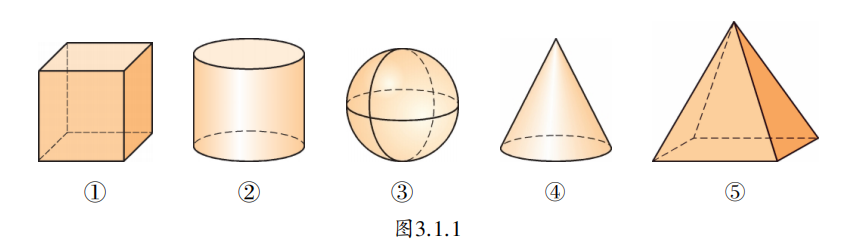
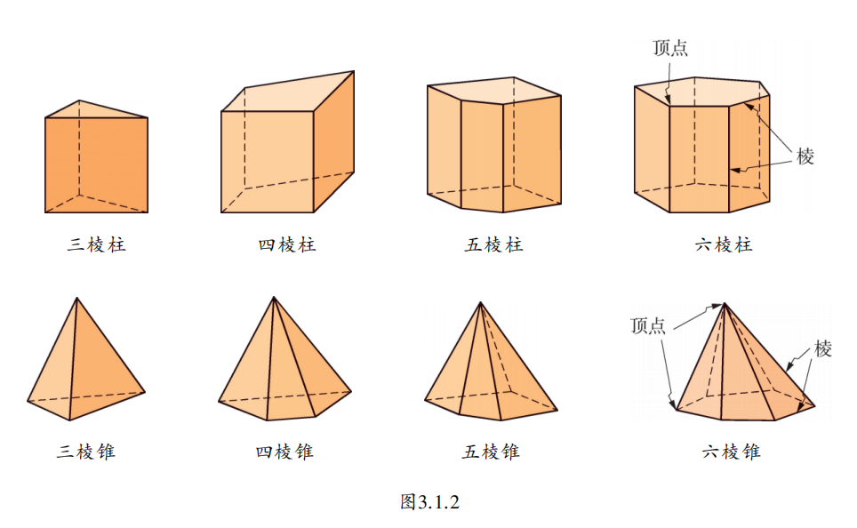
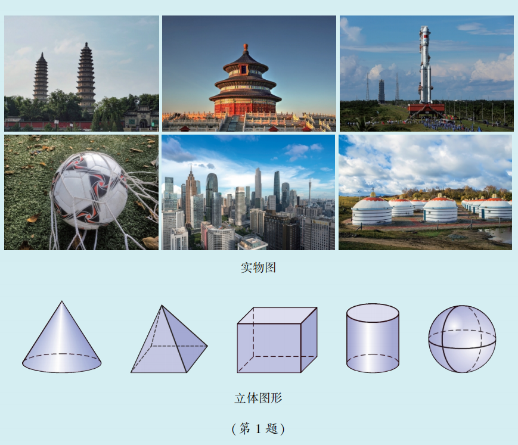
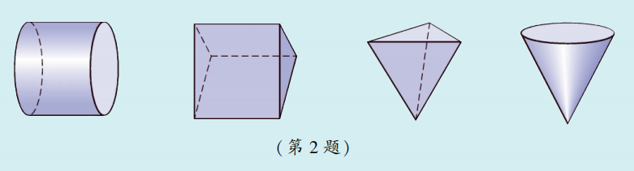

我们生活在三维世界中，随时随地看到的和接触到的物体都是立体的。有些物体，像石头、植物等千姿百态，呈现出独特的形状。而有些物体具有较为规则的形状，如人们辛勤种植收获的苹果、西瓜等水果；又如人类从古至今创造的各种建筑——古代的草堂、金字塔、土楼，以及当代的空间站、水立方、东方明珠等。
仔细观察这些物体，我们发现它们（或其一部分）可以抽象成某些立体图形。下面我们就来认识常见的柱体、锥体和球体。

我们把图3.1.1中①②所表示的立体图形叫做柱体；④⑤叫做锥体；③叫做球体。你能找出和这些立体图形相类似的物体吗？
进一步观察：①②虽然都是柱体，但①是棱柱，②是圆柱；④⑤都是锥体，但④是圆锥，⑤是棱锥。它们的差别在哪里？

在棱柱和棱锥中，相邻两个面的交线叫做棱，两条棱的交点叫做顶点。
我们还可以发现，图3.1.1中的①⑤与②③④存在差异：围成①⑤的每一个面都是平的，像这样的立体图形又称为多面体。
你能说出圆柱和棱柱的共同点与不同点吗？
1. 本题的图中给出了一些实物图，也给出了一些立体图形。试找出实物图中与立体图形相类似的实物（或实物的一部分）。

2. 写出下列立体图形的名称。

3. 五棱柱、六棱柱各有多少个面？多少条棱？多少个顶点？
✨ 从具体到抽象，用数学的眼光看世界 ✨